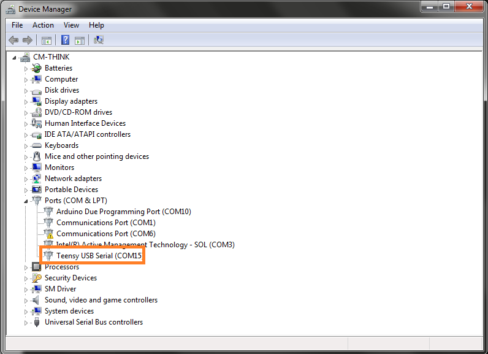

How to Reflash the Microcontroller
If for any reason the triggering unit stops working, or requires a software change, you will need to re-flash the Teensy microcontroller.
To do so:
Install Arduino: http://arduino.cc/en/Main/Software (I used version 1.6.1)
Install TeensyDuino: https://www.pjrc.com/teensy/td_download.html
Connect the triggering unit to your computer's USB port.
Open Windows Device manager and find the Teensy. You will typically find it under ports.

Note down the COMPORT number (in this case its 15)
Down the source code for the unit from github: Arterial-BP-MRI-Triggering-Unit
Next open the Arduino software and open the pressure_trigger_module.ino sketch.
Now you can push your changes to the Teensy microcontroller by pressing VERIFY and then UPLOAD.
Usually this is all you have to do, but sometimes the Teensy requires a manual reset and the software will tell you so by giving you a red error message on the console. If that happens, open the aluminum case (theres a screwdriver that fits perfectly in my drawer) and press the little black button on the teensy board.
If you need to modify my source code there to plenty of resources on the Arduino forum and the Teensy support forum. The language used to program the Arduino boards is essentially C++, without exceptions and other advanced features.
Note: The contents of the ".ino" file are compiled differently from the .cpp and .h files. Arduino attempts to automatically generate the header file, and this can lead to difficult to understand compilation errors if you use features like classes in this particular source file. For this reason, I recommend putting nothing more than setup(), main() and very basic functions in the ".ino" file.